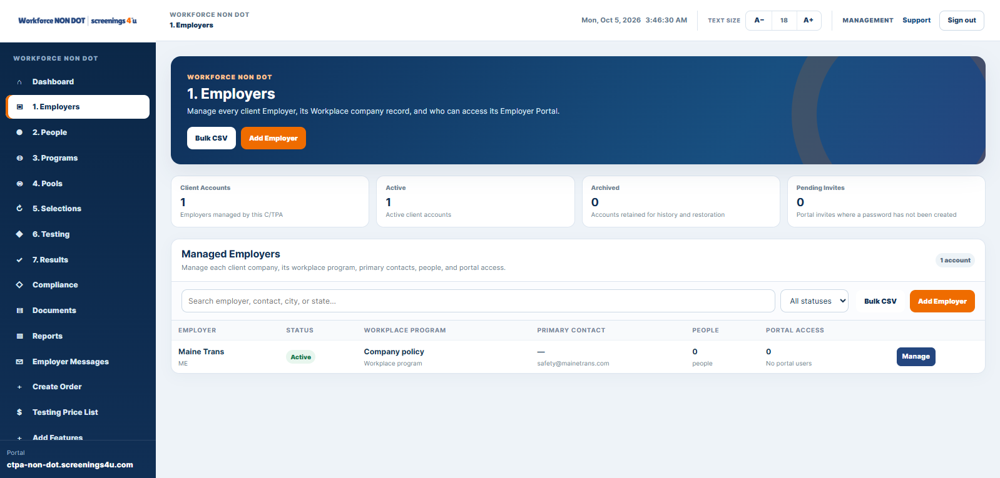
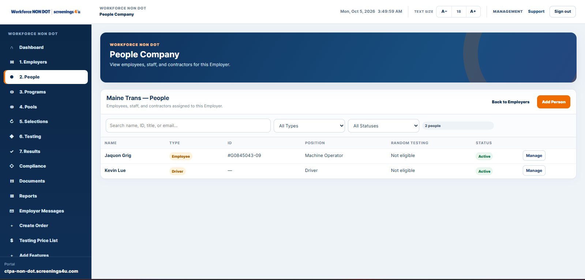
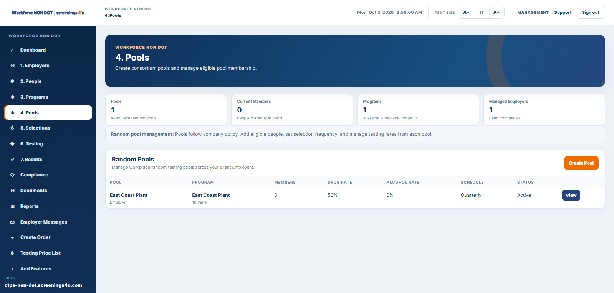
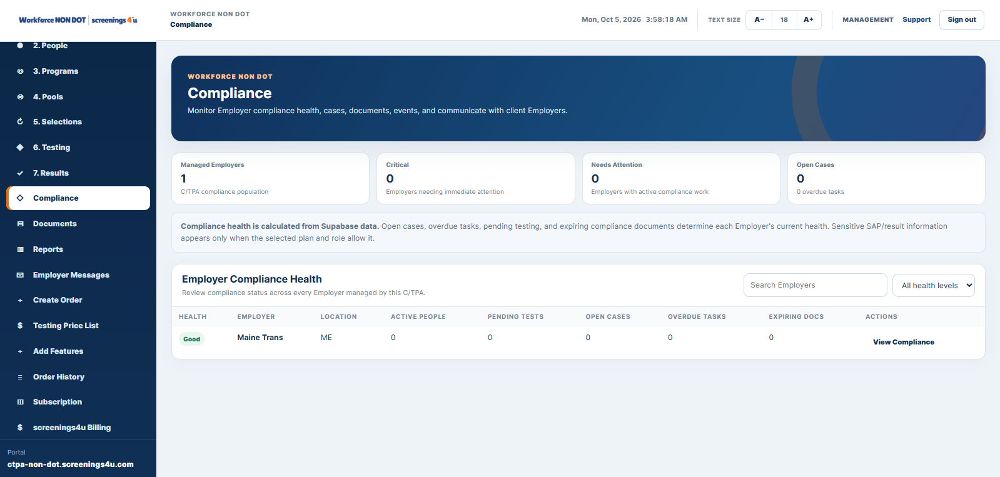
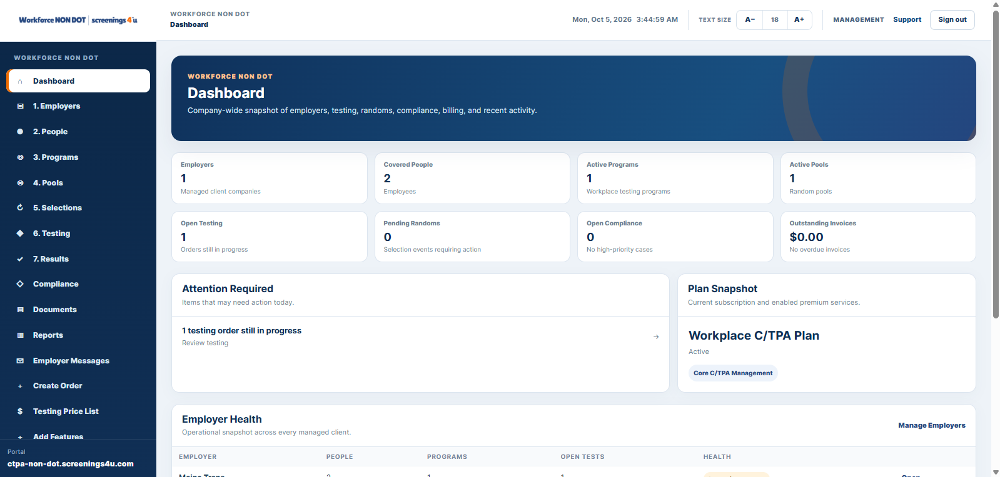

Employee Management
Maintain employee records, status and workforce participation.
Workforce gives direct employers one SaaS workspace for employees, programs, random testing, testing orders, results, compliance, documents and reporting.

Employer plans scale from core operations to advanced reporting, integrations and white-label controls.
Maintain employee records, status and workforce participation.
Create and administer company-specific non-DOT workforce programs.
Manage eligibility and random selections where your policy requires them.
Create and track testing activity for employees.
Review authorized result summaries and sensitive results on eligible plans.
Track open work, policies, acknowledgments and records.
Keep workforce and program documents connected.
Use standard and advanced reporting as your operation grows.

Your people data drives programs, testing, policies, compliance and reporting.
Random eligibility and selection history stay connected to the employees behind the program.


Professional and Enterprise plans add deeper compliance and operational controls.
Use standard or advanced reports based on the plan you select.

Start with Essential, Professional or Enterprise and add connected services when needed.